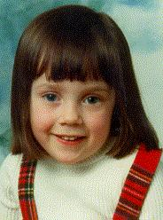

About Me :-P
 Well this is me- about 17 years ago. If you want to know the nitty gritty of my achievements then you can look at my curriculum vitae- especially if you think you might like to offer me a £40k job.
To find out about who I don't like I have a growing list of 'anti-Gods' and another of 'heros and heroines'.
I was born in Durham in 1978, but we moved down to Bristol not long after, so I have no memory of living there. This does however mean that I can of course claim to be from either North or South depending on which is least likely to get me beaten up at any one time!
My interest in wildlife and birdwatching caused me to study biology- first a degree and now a PhD, both in Aberystwyth. When I was about seven I was first taken over to Skomer and I guess that is what really sold conservation to me. From the age of 14 I worked voluntarily for the Avon Wildlife Trust and at 16 I did a course allowing me to co-lead workdays. I gave up my work for the Trust while I did my A-levels to do bird ringing instead. I was all for a career in conservation and management until I decided that was far too much like hard work- lots of competition and no money. So I took up science. For more work and less money. I'll get it sorted one day.
When I'm not working- which seems to be rarer and rarer as time goes on- I like drawing, in fact I used to want to do that for a career until Art at school changed my mind! I play the piano rather badly and I probably watch too much TV. I still like disappearing off into the middle of Wales with my binoculars though.
If you want to know more about what I am doing now look at my work page but don't expect to find it interesting unless you have a passion for fungi!
Back to main page